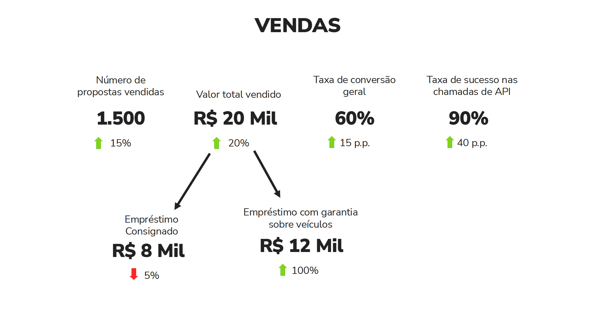

1 Introdução
Este artigo discute como eu melhorei o meu processo de Data Storytelling dentro de um relatório mensal que foi entregue ao Banco BMG (o qual é um dos maiores bancos comerciais do mercado brasileiro). Busco compartilhar o que aprendi nesse processo, e dou algumas dicas que possivelmente vão ajudá-lo a construir relatórios de dados mais intuitivos, cativantes, claros e efetivos.
Em resumo, vamos discutir neste artigo as seguintes dicas:
- Data Storytelling é sobre contar histórias através de dados;
- Evite textos longos em seus slides;
- Trace relações entre os indicadores;
- Construa sua história em torno de uma mensagem principal;
- Entregue sua história aos poucos;
- Histórias tem estrutura, use essas estruturas ao seu favor (modelo dos 4 C’s e evolução do personagem);
A maior parte desses conhecimentos foram construídos através de intensa pesquisa, reflexão e planejamento sobre as minhas apresentações, e, posteriormente, adquirindo feedbacks, e realizando pequenos ajustes aqui e ali. Sendo assim, um grande trabalho como um todo, e, como você pode esperar, esse processo também envolveu mais de uma pessoa.
Durante esse processo, eu tive ajuda de Andressa de Souza Freitas, e, principalmente, da UX Designer Alê Fernandes. Os conhecimentos da Alê revolucionaram a maneira como eu construo minhas apresentações, e, por isso, eu sou imensamente grato a ela ❤️.
Todos os dados, gráficos e imagens mostrados neste artigo são meramente ilustrativos. Todos os números apresentados foram gerados de forma aleatória por um computador! Portanto, eles não representam os dados reais da plataforma Blip ou do Banco BMG de nenhuma forma ou dimensão!
2 Como era esse relatório antes ?
Na época, estávamos construindo um relatório mensal contendo vários indicadores e gráficos que mostravam o estado atual e a evolução recente dos serviços e produtos do Banco BMG ofertados dentro do canal do WhatsApp.
Contudo, o formato dessa apresentação era problemático. Nós trazíamos uma quantidade monumental de informações para o banco. A apresentação usualmente trazia em torno de 40 slides diferentes, com aproximadamente 36 gráficos e 70 indicadores diferentes. Para mais, nós tentávamos apresentar todo esse volume de informações em uma reunião de apenas 1 hora.
O resultado final disso tudo era uma apresentação que trazia um volume monumental de informações, porém, que também trazia um volume muito pequeno de insights e novas ideias de negócio para os gestores. Em Figura 1 temos uma representação de um dos vários slides dessa apresentação1. Imagine que essa apresentação trazia em torno de 40 slides semelhantes a esse:

Perceba que esse slide se parece mais com uma página de um dashboard, do que de um relatório apresentando as últimas tendências do mercado ou do negócio do banco. Isso é muito importante! Se a sua apresentação traz vários indicadores diferentes espalhados pela página, sem contextualizá-los, sem relacioná-los uns com os outros, sem trazer o que eles significam em conjunto, essa apresentação vai muito provavelmente se parecer com os dashboards que você já produz para o seu cliente.
Tendo isso em mente, qual é o incentivo/motivo/razão que o seu cliente tem para assistir à sua apresentação? Em outras palavras, se a sua apresentação mostra os mesmos gráficos/indicadores que os seus dashboards apresentam, o seu cliente não tem incentivo/motivo nenhum para assistir à sua apresentação. Pois não há nada na sua apresentação que seja novo, ou nenhuma informação da qual o seu cliente não tenha já acesso diretamente.
3 Como evoluímos ?
Agora que você possui uma noção do tamanho que era o problema, nas próximas seções deste artigo, vou discutir como nós utilizamos data storytelling para evoluir esse modelo de apresentação para algo melhor, algo que desse maior clareza e impacto para o nosso cliente.
3.1 Data Storytelling não é sobre escolher “o melhor gráfico”
Alguns poucos analistas entendem “data storytelling” como um problema de visualização, ou, como a ciência de “escolher os melhores gráficos” para sua apresentação, ou como projetar gráficos inovadores, bonitos e complexos.
Contudo, data storytelling é sobre contar histórias com dados. Não sobre como construir visualizações. Escolher a visualização certa para apresentar os seus dados, torná-la melhor, mais bonita e mais limpa, é apenas uma parte do processo. Uma parte muito importante, pois isso vai te ajudar a contar sua história de uma maneira mais clara e eficaz, e, com isso, atingir um público maior.
3.2 Uma guerra constante pela atenção
Quando estamos apresentando algo, estamos constantemente batalhando pela atenção dos nossos espectadores. Essa é uma batalha difícil, não apenas porque nós podemos (sem querer) atrair a atenção para os lugares errados, mas também porque existem muitas fontes de distração no mundo moderno (e.g. celulares, emails, etc.)!
Boa parte do sucesso em data storytelling depende de você contar uma história cativante, que consiga capturar a atenção de seus espectadores. Por isso, as próximas seções vão focar bastante em dicas que contribuam para essa captura, ou que te ajudam a não dissipar, reduzir ou atrapalhar a atenção desses espectadores.
3.3 Por que evitar textos longos em seus slides?
Tente ser parsimonioso nos seus slides! Isto é, tente incluir o mínimo possível de informação dentro dele. Em geral, evite incluir textos muito longos em seus slides.
Veja o slide em Figura 2 como exemplo. O problema principal desse slide, é que ele divide muito a atenção de seu espectador.

Ao apresentar um slide, os seus espectadores tem que prestar atenção na sua voz. Isto é, no que você está comunicando verbalmente durante a apresentação. E ao mesmo tempo, eles também precisam prestar atenção no conteúdo do slide. Contudo, esse longo parágrafo no canto esquerdo do slide mostrado em Figura 2 é problemático. Pois ele chama atenção demais!
Esse elemento desperta tanto a nossa curiosidade, que ao ver esse slide, você (leitor) provavelmente tentou ler esse texto longo antes mesmo de ler o que estou descrevendo agora neste parágrafo. O mesmo vai acontecer com os espectadores de sua apresentação. Ou seja, os seus espectadores vão imediatamente tentar ler esse parágrafo longo.
Contudo, ler e interpretar um texto longo, exige certo esforço e muita atenção. Como resultado, enquanto os seus espectadores leêm esse texto, eles não vão conseguir prestar atenção em outros elementos de sua apresentação. Por exemplo, na sua fala.
Isso pode ser crucial, pois talvez você traga uma informação a mais, ou uma conexão extremamente importante na sua fala, e eles podem acabar perdendo isso enquanto estão tentando ler esse texto. Portanto, evite ao máximo incluir textos muito longos em seus slides.
3.4 Trace relações entre os indicadores
Agora, vamos analisar o slide mostrado em Figura 3. Perceba que esse slide, novamente, lembra muito uma página de um dashboard. Como resultado, o slide não parece tão cativante à primeira vista, pois ele só mostra os indicadores, ele não constrói uma relação, ou uma história entre eles.

Se prestarmos atenção nesses indicadores, podemos identificar alguns efeitos que estão acontecendo ao longo deles. E se refletirmos um pouco mais sobre esses efeitos, vamos perceber que esses efeitos são relacionáveis!
Por exemplo, perceba que há um aumento significativo nas vendas. Tanto no número de propostas vendidas quanto no valor total em si que essas propostas geraram. Porém, perceba que esse crescimento nas vendas não ocorreu no produto “Empréstimo Consignado”, e sim, no produto “Empréstimo com garantia de veículos”. Ou seja, o produto “Empréstimo Consignado” teve uma queda de vendas nesse mês, porém, o produto “Empréstimo com garantia de veículos” obteve um super resultado que conseguiu cobrir e muito essa queda, e no fim, conseguiu aumentar as vendas como um todo do banco.
Além disso, outros efeitos que podemos perceber são os aumentos na taxa de conversão e na taxa de sucesso de API. Esses também são fatores que contribuíram para o aumento nas vendas. Pois um aumento na taxa de conversão significa que uma parcela maior dos nossos clientes está adquirindo os nossos produtos. Já um aumento na taxa de sucesso na API, significa que temos menos erros nos registros das vendas na plataforma, e isso é obviamente positivo, pois nós temos uma perda de vendas menor por causa de travamentos e erros nesse sistema de registro.
Perceba que todas essas relações nos ajudam a construir uma história sobre como as vendas aumentaram nesse mês, e é justamente isso que queremos atingir. Portanto, tente sempre construir relações entre os seus indicadores, de modo a formar uma história sobre um resultado principal.
3.5 Construa sua história em torno de uma mensagem principal
Apenas para deixar claro essa ideia, ao identificar os vários efeitos que descrevemos em Seção 3.4, sobre o slide mostrado em Figura 3, é interessante nos questionarmos: qual desses vários efeitos é o principal resultado? Em outras palavras, qual desses efeitos é o que mais interessa os gerentes do banco que estão assistindo à sua apresentação?
Certamente o aumento sobre as vendas é o efeito principal. É o efeito que mais interessa os gerentes que estão assistindo à sua apresentação. Portanto, tente construir a sua história em torno desse resultado, ou dessa mensagem principal. Use os outros indicadores para explicar como esse resultado principal aconteceu.
Isso também é muito importante! Todo gerente gosta muito de ouvir a palavra “aumento nas vendas”. Porém, ele também está sempre interessado em saber o “como esse aumento foi gerado?”. Ou seja, ele precisa saber quais foram as ações realizadas que geraram esse impacto positivo.
Pois ao identificar essas ações, esse gerente tem a capacidade de aplicar essas ações em outras partes de seu negócio, e, com certa esperança, ele pode acabar disseminando esse efeito positivo que você descreveu para outras áreas, e, como resultado, ele pode acabar aumentando ainda mais as vendas da empresa.
3.6 Entregue sua história aos poucos
O c√©rebro humano consegue processar uma quantidade limitada de informa√ß√µes de uma vez s√≥. Como resultado, se voc√™ tentar explicar várias informa√ß√µes para os seus espectadores, em um √∫nico slide, eles v√£o acabar atingindo esse limite ü§Ø, e simplesmente n√£o v√£o conseguir raciocinar, compreender ou assimilar o que voc√™ está explicando.
Portanto, entregue a sua história aos poucos. Evite condensar várias informações em um único slide! Divida o conteúdo em partes, e explique uma parte de cada vez!
3.7 Colocando essas dicas em prática
Portanto, nas seções passadas discutimos as seguintes dicas:
- Evite textos longos em seus slides;
- Trace relações entre os indicadores;
- Construa sua história em torno de uma mensagem principal;
- Entregue sua história aos poucos;
Vamos botar essas dicas em prática, e reformular o slide mostrado em Figura 3.
4 Histórias tem estrutura, use essas estruturas ao seu favor
4.1 O modelo dos quatro C’s como um excelente guia
O modelo dos quatro C’s se refere a essas quatro palavras:
Contexto, Conflito, Consequência, Conselho.
4.2 Evolução do personagem como uma outra alternativa
Relatórios no final do ano são bastante apropriados para incluir seções que mostram a evolução do negócio (ou a evolução do personagem).
Footnotes
Vale relembrar que os números e gráficos apresentados nessa imagem são meramente ilustrativos, e, foram definidos de forma completamente aleatória.↩︎